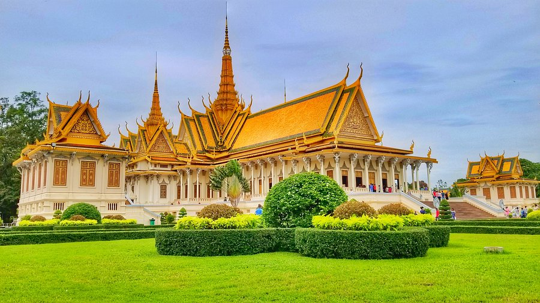

Historic SiteRoyal Palace & Silver Pagoda
The stunning royal compound on the riverfront is home to the glittering Silver Pagoda, the Throne Hall, and beautifully maintained grounds. One of Phnom Penh's most iconic sights.
Allow 1–2 hours
Riverside area